A modern insurance platform designed to communicate trust, expertise, and
data-driven underwriting capabilities.
Industry
Insurance / Specialty Risk
Role
UI/UX Design & Front-End Development
Timeline
6–8 weeks
Tools
Figma, HTML, CSS, JavaScript
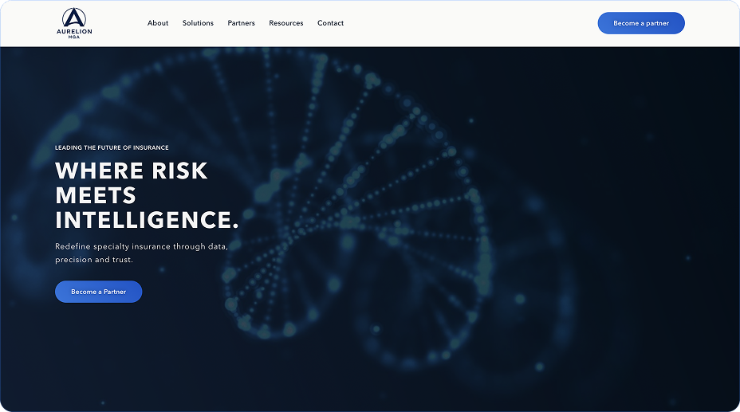
Project Overview
Designing a modern insurance platform
Translating complex insurance expertise into a clear, structured, and
trustworthy digital experience.
Overview
Aurelion is a specialty insurance platform designed to present
underwriting expertise, insights, and capabilities in a clear and
structured digital format. The goal was to create a modern interface
that communicates professionalism, clarity, and trust.
Challenge
Insurance platforms often contain dense information and technical
terminology. The challenge was to organize complex content into a
clear structure that remains professional while still being easy to
navigate.
Approach
The interface was built around strong visual hierarchy, modular
sections, and consistent spacing. A refined typography system and
structured layout were used to guide users through complex information
without overwhelming them.
Outcome
The result is a modern platform that communicates trust and expertise
while simplifying complex insurance content. The interface balances
strong visual presentation with clear information architecture.
The Challenge
Simplifying complex insurance communication.
Balancing technical accuracy with a clear and trustworthy digital experience.
User Problem
Insurance platforms often present highly technical information that can be
difficult for users to quickly understand. Visitors need to grasp complex
services, underwriting insights, and risk capabilities without navigating
dense text or fragmented layouts.
Business Problem
Aurelion needed a digital presence that clearly communicates credibility,
expertise, and industry authority. The website had to position the company
as a trusted MGA while effectively presenting its services and capabilities
to partners and brokers.
UX Challenge
The challenge was structuring complex insurance information into an interface
that remains clear and approachable. Achieving this required strong
hierarchy, modular content sections, and carefully organized navigation.
Brand Challenge
The visual experience needed to balance professionalism and clarity with a
modern aesthetic. The interface had to feel authoritative and data-driven
while still remaining accessible and easy to navigate.
The Approach
Designing a structured and data-driven experience
A structured design process was used to transform complex insurance information
into a clear and intuitive digital experience.
Research
Understanding the insurance landscape was the first step in shaping the
platform. Competitor platforms and industry websites were analyzed to identify
common patterns, content structures, and opportunities to improve clarity and
usability.
Information Architecture
A clear information structure was defined to organize complex content into
intuitive sections. The goal was to create a navigation system that allows
users to quickly understand services, capabilities, and key resources.
Aurelion Hero
Value Proposition Strip
Solutions Overview
About Aurelion
Partner Trust Strip
Insights & Market Intelligence
Call to Action
Footer
Wireframes
Low-fidelity wireframes were used to explore layout structures and define the
overall content hierarchy. These wireframes focused on establishing clear
sections, balanced spacing, and modular content blocks.
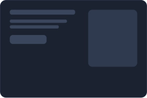
Hero Layout
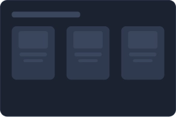
Card Grid Layout
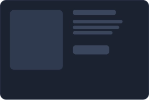
Image + Content Layout
UX Decisions
Design decisions were guided by clarity, hierarchy, and readability. Content
density, spacing, and layout structure were carefully refined to ensure users
can navigate complex information without cognitive overload.
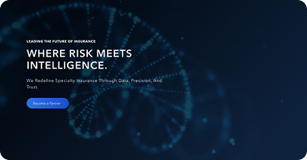
Hero Hierarchy
The hero section establishes a clear visual hierarchy with a strong
headline, concise description, and a primary call-to-action, guiding users
toward partnership engagement.
Trust Through Partner Credibility
Global carrier and broker logos reinforce credibility and industry
authority, helping establish immediate trust with potential partners and
stakeholders.
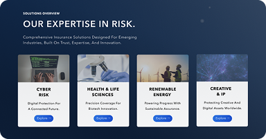
Modular Solutions Structure
Services are presented through modular cards that organize complex
insurance capabilities into clear, scannable solution categories.
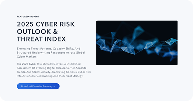
Content-Driven Insights
Featured insights highlight research and market intelligence, positioning
the platform as a data-driven authority within the specialty insurance
space.
Design System
Building a consistent interface system
The interface was built on a structured design system that defines color usage,
typography hierarchy, layout rhythm, and reusable UI components to ensure visual
consistency across the platform.
Visual Direction
The visual direction focuses on clarity, trust, and structured information
presentation, reflecting the analytical nature of specialty insurance while
maintaining a modern digital interface.
Specialty MGA for complex industries
Built to operate at scale
Ready to underwrite the future?
Color System
A restricted color palette was established to reinforce brand authority while
maintaining strong contrast and readability across dark interface environments.
Background Primary
#0D1D36
Primary Accent
#184FC8
Secondary Accent
#2D72DF
Light Neutral
#F5F5F5
Typography
A clear typographic hierarchy was designed to guide content scanning and
improve readability across complex information sections.
Aa
Bb Cc Dd Ee Ff Gg Hh Ii Jj Kk Ll Mm Nn
Oo Pp Qq Rr Ss Tt Uu Vv Ww Xx Yy Zz
Layout & Grid System
A structured layout grid and spacing rhythm were used to organize content
consistently across sections and maintain visual balance throughout the
interface.
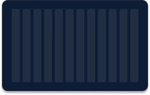
12 Column Grid System
A structured grid used to align content, control spacing, and ensure
consistent layout across the interface.
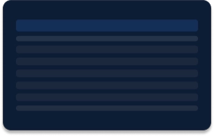
8-Section Layout System
A structured page layout divided into clear sections, ensuring clarity,
hierarchy, and consistent content flow.
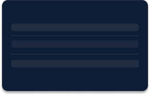
Spacing System
A consistent spacing scale used to create rhythm, balance, and visual
hierarchy across the interface.
Core Components
Reusable interface components.
A set of reusable UI components designed to ensure consistency, scalability,
and clarity across the interface.
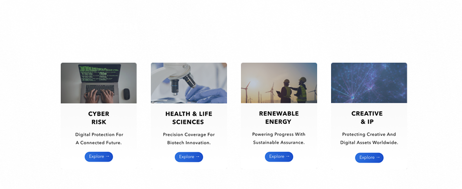
Final UI
A cohesive interface built for clarity and scale.
Key interface sections reflecting a structured and scalable design system.
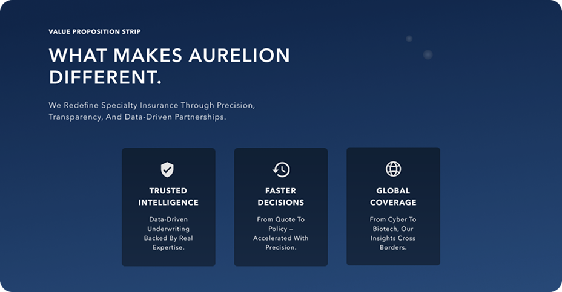
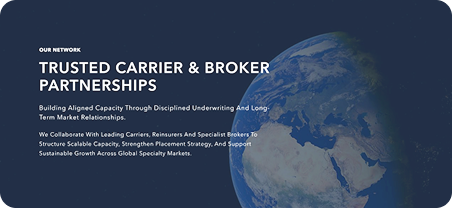
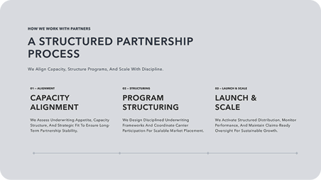
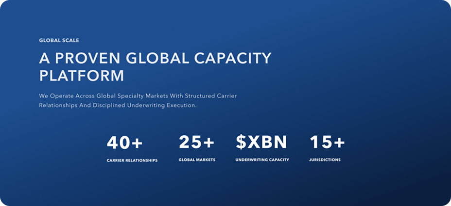
Responsive Implementation
A seamless experience across every screen.
The interface was designed and built to maintain clarity, structure, and
performance across all devices and breakpoints.
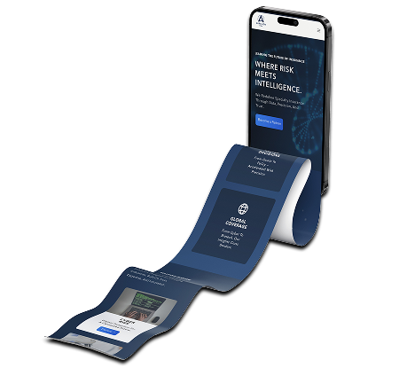
Outcome
A scalable and structured product experience.
The final outcome delivers a clear, consistent, and scalable interface designed
to support growth and complex user needs.
Established a clear information hierarchy
Ensuring users can navigate complex content with ease.
Built a scalable design system
Allowing the product to expand without losing consistency.
Delivered a responsive and performant interface
Maintaining usability across all devices and screen sizes.
Live Experience
See the product in action.
A fully designed and developed interface — built to perform across real-world
scenarios and devices.